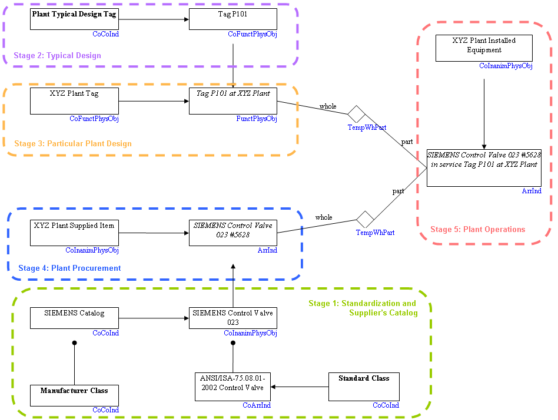
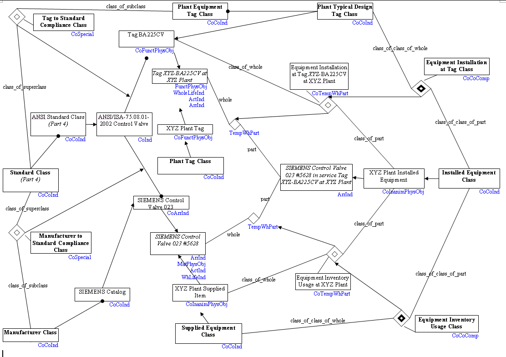
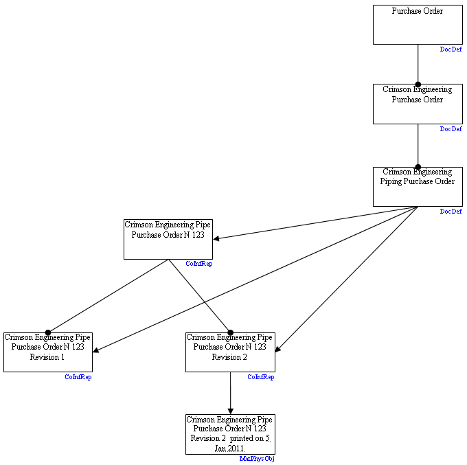
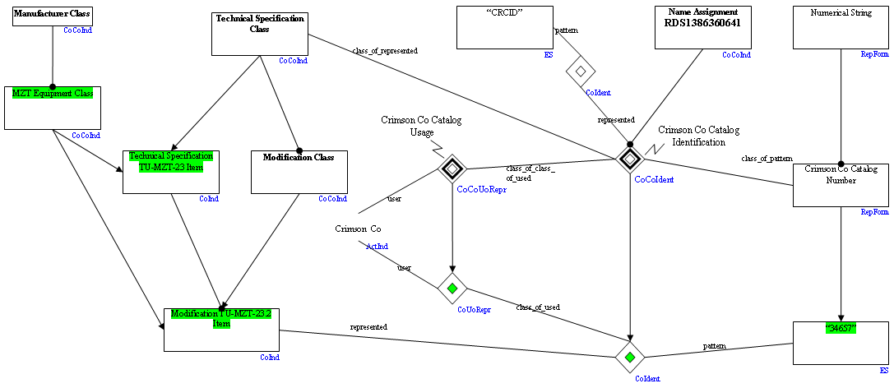
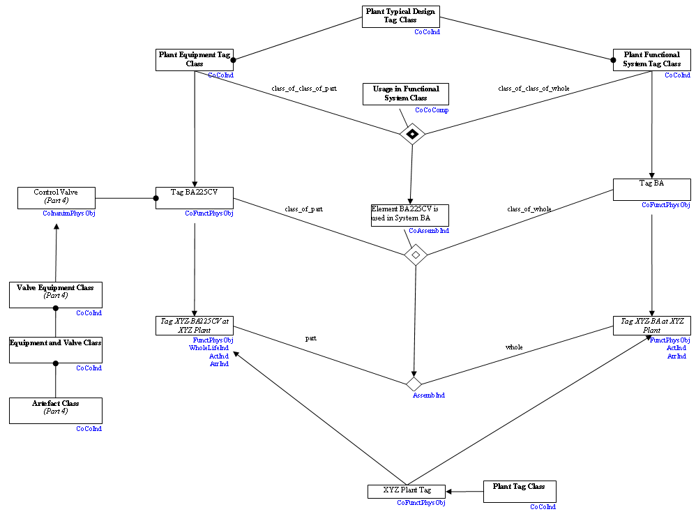
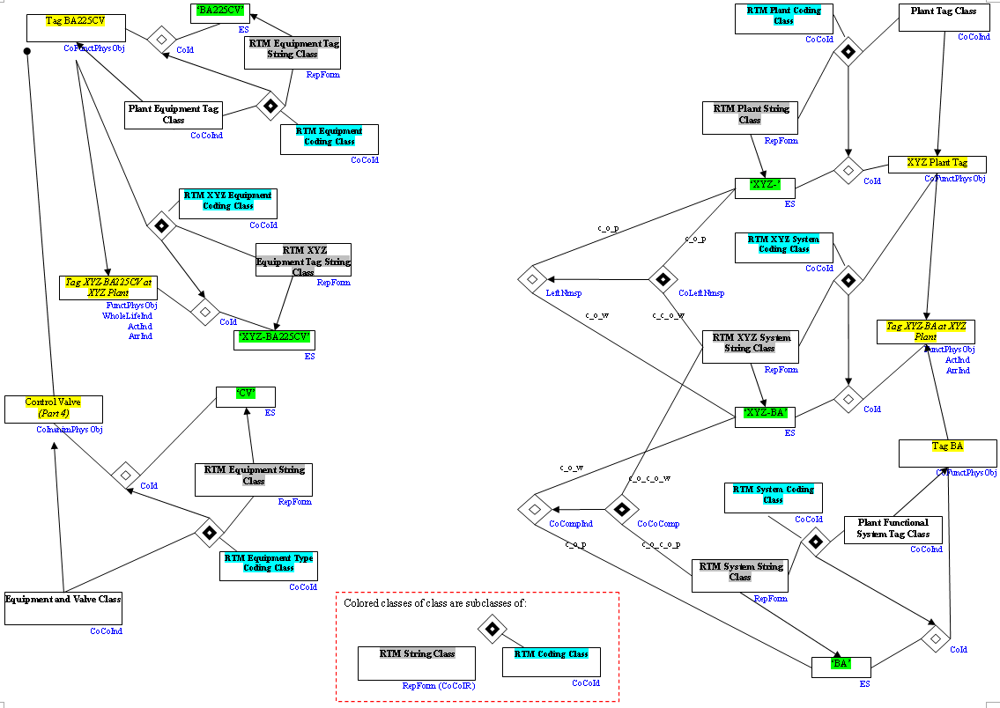
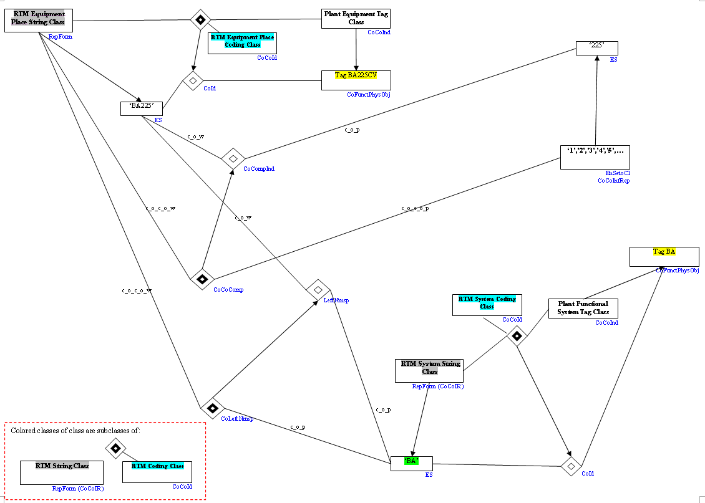
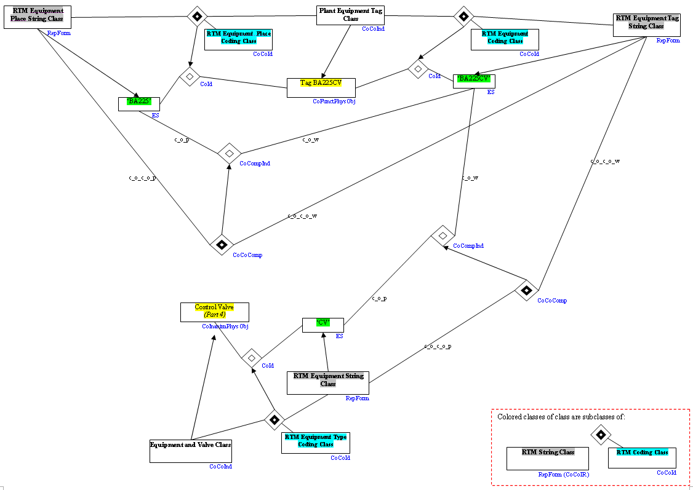
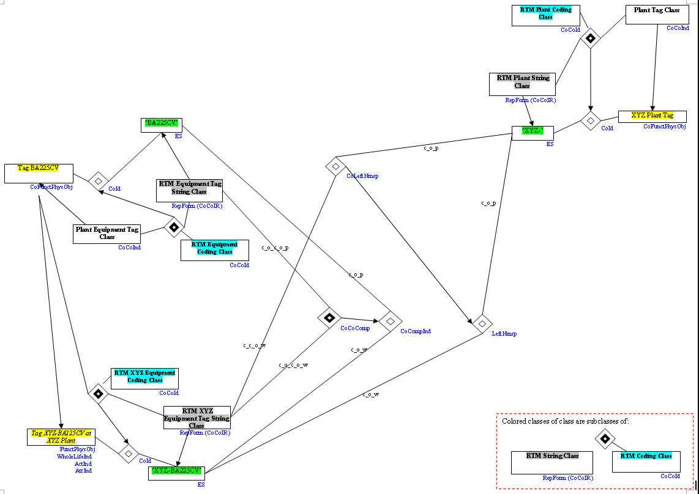
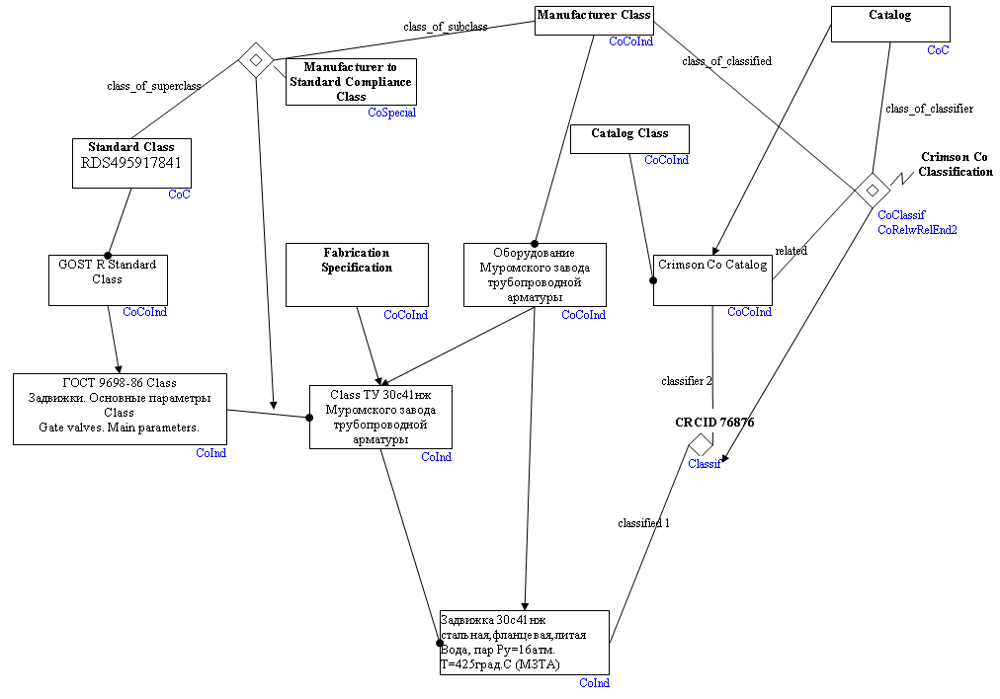

| :: 03 дек 2020 |
| О компании | Проекты | Партнеры |
1. Краткая диаграмма интеграции данных жизненного цикла оборудования. Отражает связь стандартов, элементов каталога оборудования, кодов (тэгов) типового проекта, кодов (тэгов) рабочей документации конкретной установки, объектов системы закупки и объектов системы управления эксплуатацией.  2. Полная диаграмма интеграции данных жизненного цикла оборудования. Отражает модель классификаций и специализаций классов и отношений предыдущей диаграммы.  3. Модель определения формата документа, связи версий документа и его печатных копий.  4. Классификация оборудования по спецификациям производителя и каталогу сторонней организации (пользователя или дистрибутора).  5. Функциональная система, входящее в неё оборудование и идентификация их кодами (тэгами) в типовом проекте и в рабочей документации конкретной установки.  6. Декомпозиция и семантическое моделирование структуры кодов предыдущей диаграммы.     7. Альтернативный вариант модели классификации оборудования по стандартам и спецификациям производителя, с моделированием идентификации по каталогу сторонней организации (пользователя или дистрибутора) как класса отношений.  |